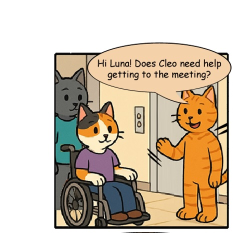
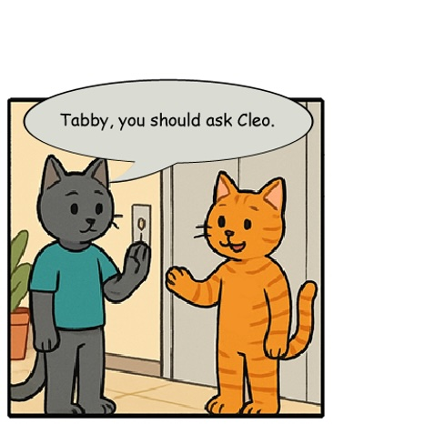
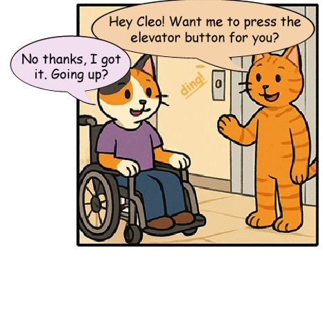
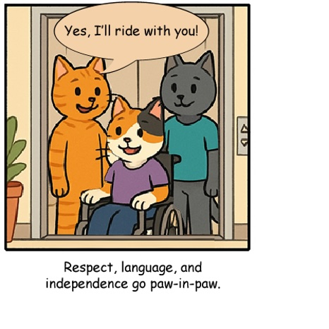

Disability Pride Month, celebrated every July, honors the history, achievements, and identities of people with disabilities.
The purpose of the month is to:
In the United States, Disability Pride Month commemorates the signing of the Americans with Disabilities Act (ADA) on July 26, 1990, a landmark civil rights law that prohibits discrimination against individuals with disabilities. It’s not just about awareness, it’s about empowerment, culture, and community. The 2025 theme, ‘We Belong Here, and We’re Here to Stay,’ sends a powerful message that people with disabilities are vital members around the world.
Please join the Abilities Team Member Resource Group to participate in activities and conversations throughout July.
Video is one of our most engaging mediums, offering powerful ways to inform, educate, and inspire Hilton stays. With its unique combination of visuals and audio presented in a synchronized format, video can significantly enhance our guests' experiences. However, ensuring this rich content is accessible to everyone, including guests with disabilities, requires thoughtful preparation and the right tools.
Audio components like dialogue, narration, music, and sound effects are fundamental to understanding video. For our guests with hearing disabilities, we provide closed captions. Captions display auditory elements as text, ensuring no vital information is missed.
Visual elements—such as people, locations, objects, and narrative events—are essential for fully experiencing our stories. To accommodate guests with vision disabilities, we provide audio description. Audio description fills natural pauses in the original audio track with narrated explanations of visual content, acting much like an expanded, spoken form of alt text. This ensures everyone can share fully in the visual storytelling.
Additionally, we include a descriptive transcript. This transcript captures the video's audio and visual details in a comprehensive text document, allowing guests to explore content at their own pace.
The most inclusive and cost-effective way to create accessible videos is by integrating these features into the initial production process. When accessibility is considered early, it becomes an integral, seamless part of the content, rather than an afterthought.
However, sometimes existing videos need accessibility enhancements after production. Fortunately, Hilton has recently partnered with 3Play Media, industry leaders in video accessibility solutions. 3Play simplifies this process, transforming any video into fully accessible content quickly and affordably. Within just a few business days, 3Play can deliver accurate captions, thorough audio descriptions, and comprehensive transcripts.
We encourage all Hilton content creators to leverage this new partnership to ensure videos meet the highest accessibility standards, enriching the experience for all users. If you're ready to make your video content more inclusive, learn more about how to make your videos accessible and connect with Hilton’s Accessibility Center of Excellence for expert guidance and support.
Together, with thoughtful planning and expert partnerships, we can ensure that our videos resonate powerfully with all guests and Team Members, enhancing their Hilton experience.
Meet Hugh Achiever; Hugh is a 25-year-old frequent traveler who lives with dyslexia, a learning disability that affects reading and processing written information. While in town for a last-minute business trip, Hugh is staying at a Hilton hotel and decides to make a same-day reservation at the hotel’s restaurant. As you answer the following questions, consider how Hugh’s experience dining at a hotel restaurant might be shaped by his needs and the barriers he may encounter.
Answer all four questions correctly by July 23 to be entered into a drawing to win a ‘All I Need is Pizza, Love & Kindness’ t-shirt from the Be Kind to Everyone store!
Shout out to our UX and UI partners for providing us with the Persona for this month’s contest.
Hilary Heincer – Director of Sustainability Compliance Reporting. We hope you enjoy your True royal ‘Progress Over Perfection’ t-shirt, from the Scott Vinkle Accessible T-Shirt collection.
What is the screen reader saying?
Answer: Waldorf Astroria Las Vegas
What is the guest asking for?
Answer: 2 large bath towels and 3 face cloths?
How many minutes is this hotel from Edinburgh’s Old Town?
Answer: 10 minutes
Welcome to another episode of A11y Cats!
In this strip, Tabby learns an important lesson about disability etiquette when interacting with a colleague who uses a wheelchair. With Luna’s guidance, Tabby discovers the importance of personal space, person-first language, and speaking directly to the individual—not those around them. Because in an inclusive workplace, respect and independence go paw-in-paw!



